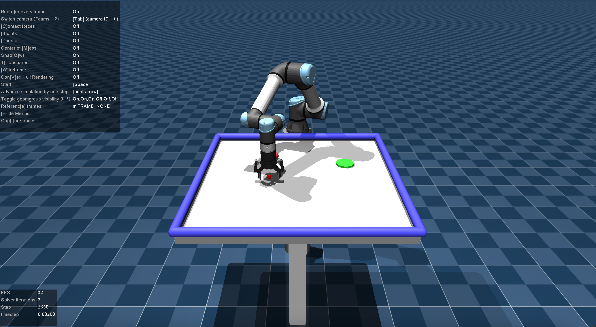

It is suggested that you install a virtual environment for this course. You can use Anaconda or Miniconda (smaller size) for this purpose. You can download Anaconda from
here. Alternatively, you can use Mamba (a faster version of conda) for this purpose. You can download Mamba from
here. Install the downloaded script by running the following command in your terminal:
$ bash <downloaded_script>.sh
After the installation, you can create a virtual environment by running the following command:
# For Anaconda
$ conda create -n <virtual_environment_name> python=3.9
$ conda activate <virtual_environment_name>
# For Mamba
$ mamba create -n <virtual_environment_name> python=3.9
$ mamba activate <virtual_environment_name>
You will need to run
mamba activate <virtual_environment_name> (or
conda) every time you open a new terminal to activate the virtual environment. You can deactivate the virtual environment by running
mamba deactivate.
We will use
MuJoCo and
dm_control for our simulation environment. You can install them by running:
$ pip install dm_control # dm_control automatically installs mujoco
also install some other dependencies:
$ pip install mujoco-python-viewer
$ pip install pyyaml
Additionally, we will use PyTorch for training our models, check out the
installation instructions. After installing PyTorch, clone the homework repository by running:
$ git clone https://github.com/cmpe591/cmpe591.github.io.git
Homeworks will be released in the
src folder of the repository. You can run the demo code by running:
$ cd cmpe591.github.io/src
$ python demo.py
You should see the following output:

environment.py and
mujoco_menagerie will be common throughout homeworks and
homework<x>.py will be added each week.
It is suggested that you use
Visual Studio Code with GitHub Copilot for easier development (though double-check everything that copilot suggests). GitHub Copilot is free for students.